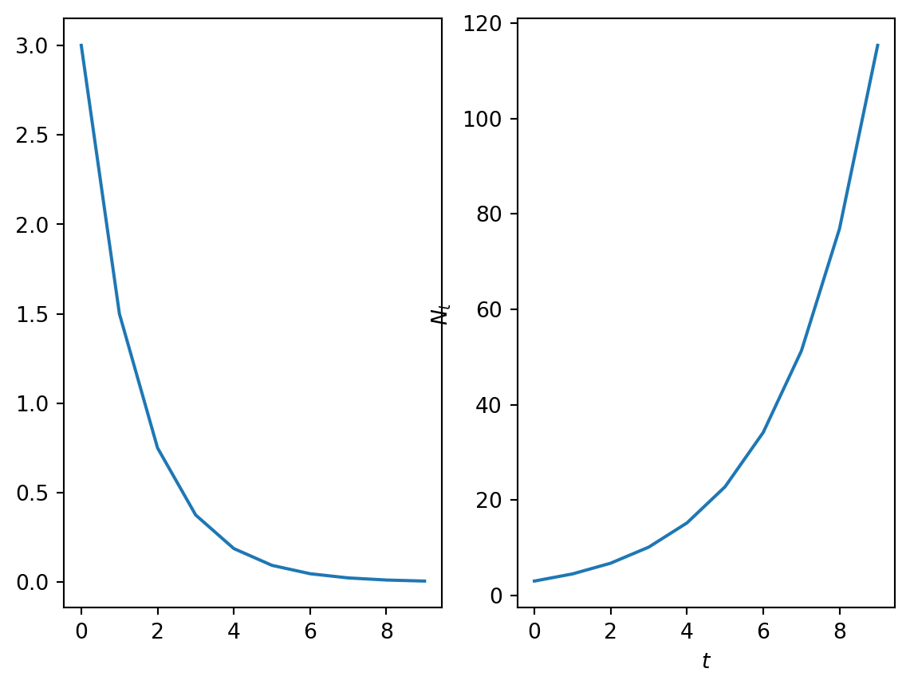
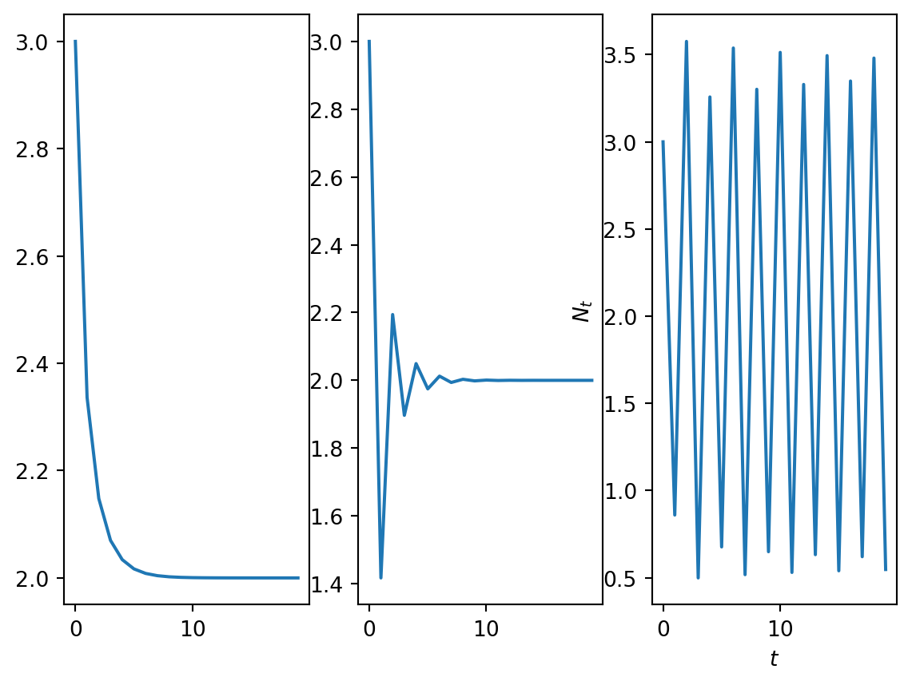
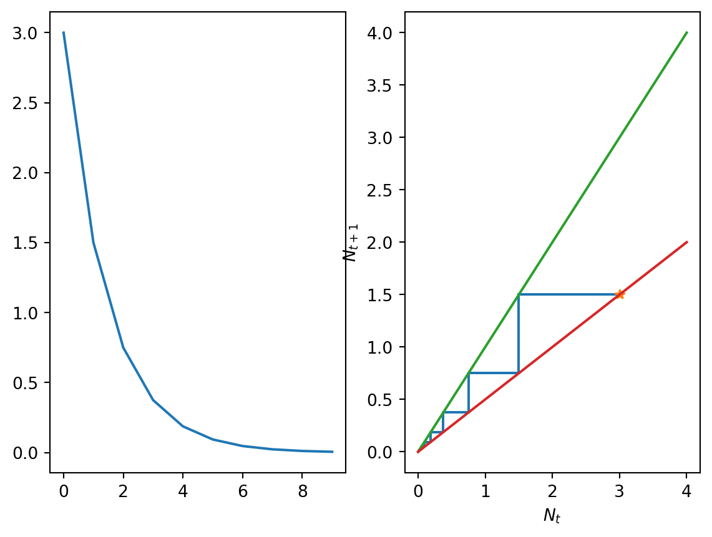
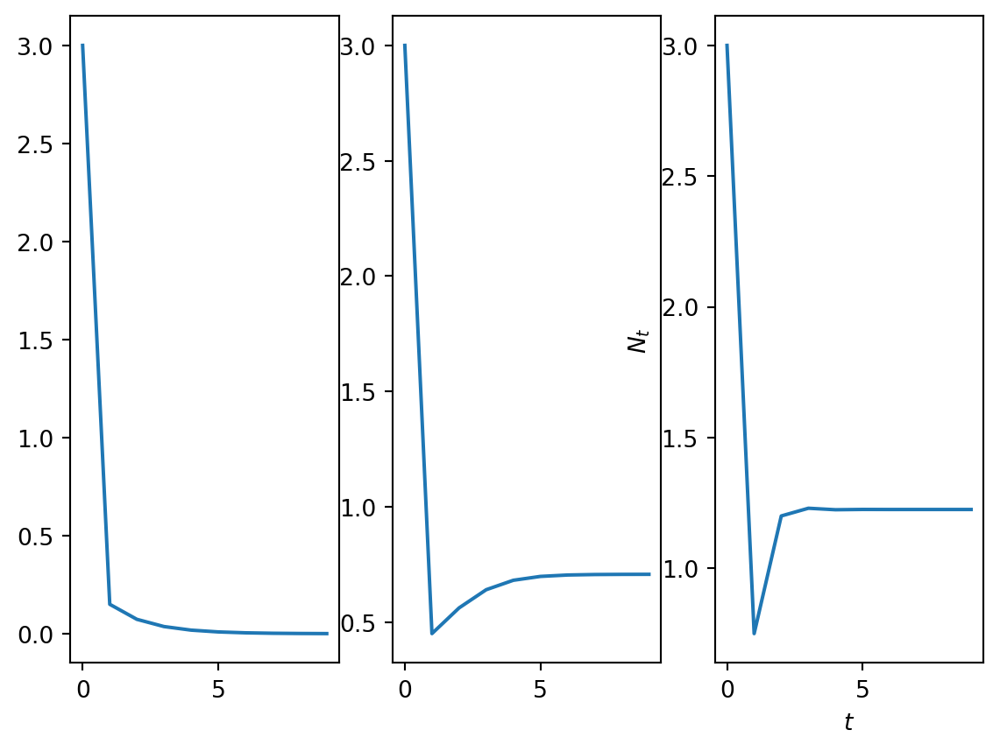
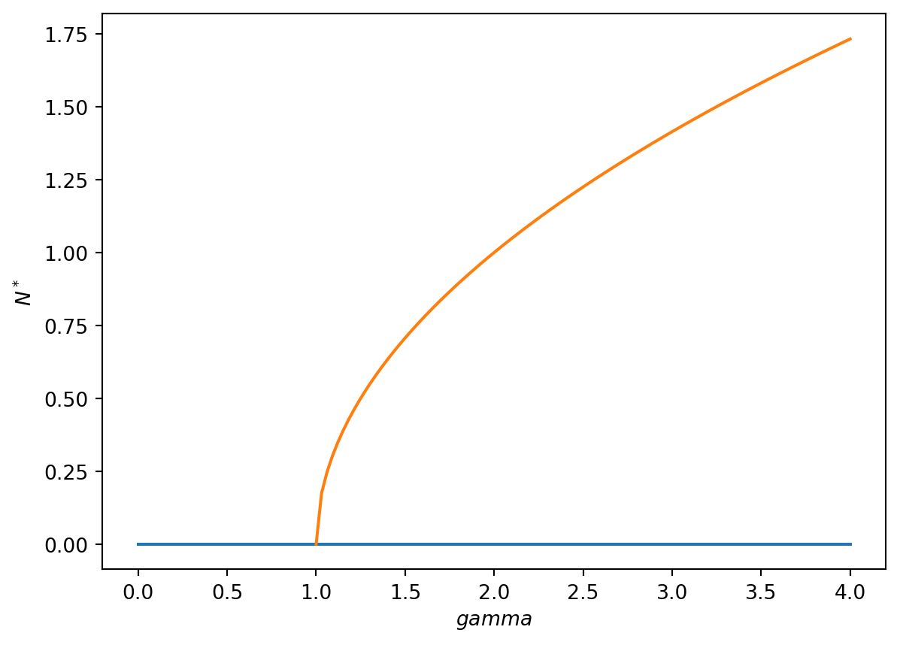
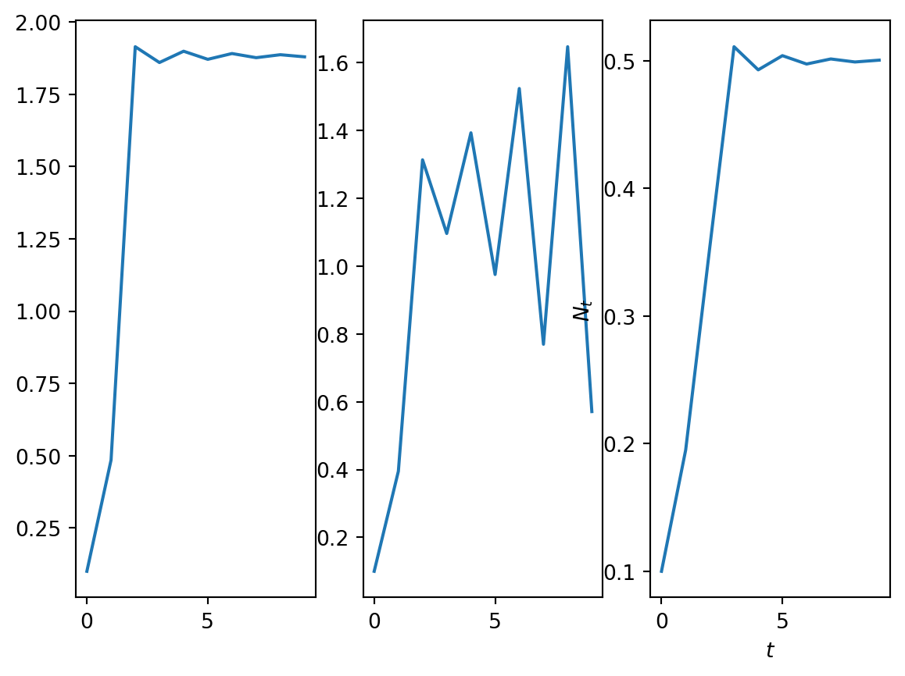
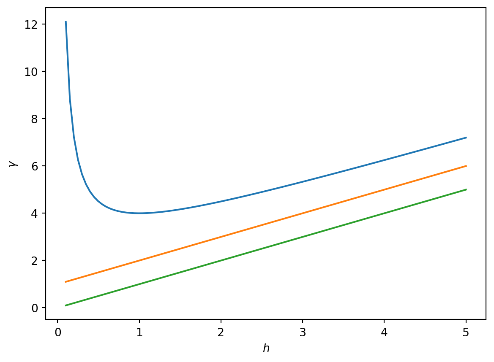

Single species population dynamics in discrete time
Let us firstly consider models of a single population defined at discrete times. Discrete (rather than continuous) time is used in population models where, for example, there are strong annual trends in the underlying animal behaviour (e.g. fish eggs hatching at a fixed time in the year), there are not overlapping generations and the population size at the next time step can be written as a function of the current population size.
A general model for a single population in discrete time
Let \(t\) be an independent variable representing time and \(N_t\) be a dependent variable representing the size of the population of a given species at time \(t\).
Consider the first order difference equation \[
N_{t+1}=N_tf(N_t)=H(N_t),
\tag{1}\] where \(f(N_t)\) is a function that defines the per capita growth rate. The function \(H(N_t)\) describes the total (net) growth rate.
Given some initial condition \(N_0\) defined such that \[
N_{t=0}=N_0,
\] the goal of this section is to develop a range of techniques that allow us to analyse the behaviour of Equation 1 for a given \(H\).
Finally, note that many of you were introduced to difference equations in the module MA21003 Discrete Mathematics. It is recommended that you revisit the section on Discrete Difference Equations.
The Malthusian model
Perhaps the simplest form for equation Equation 1 is when the net per capita growth rate is a constant.
Let \(b\) be the per capita growth rate and \(d\) the per capita death rate with \(b\) and \(d\) both positive real constants.
Hence, a population of size \(N_t\) at time \(t\) will grow by \[
bN_t
\] over the course of the next iteration and decay by \[
dN_t.
\] Therefore the population size at time \(t+1\) is \[
N_{t+1}=N_t + bN_t - dN_t=rN_t,
\tag{2}\] \end{align} where the parameter \(r=1+b-d\) is known as the net growth rate.
Given the initial condition \(N_0\), equation Equation 2 can be solved recursively as follows:
\[
N_1=rN_0,
N_2=r(N_1)=r^2N_0,
N_3=rN_2=r^3N_0, ...,
N_t=r^tN_0.
\] Hence for the case of Malthusian growth, the size of the population can be explicitly calculated for all \(t\).
In Figure 1 a numerical solution of the model is computed for different values of the parameter \(r\).
Code
import numpy as npimport matplotlib.pyplot as pltT=10t = np.arange(0, T, 1)N = np.zeros_like(t,dtype=float)N_2 = np.zeros_like(t,dtype=float)N_0=3.0r=0.5r_2=1.5def rhs(x,r): f=r*xreturn fdef SolveSingleDiff(t,rhs,N_0,r): N = np.zeros_like(t,dtype=float) N[0]=N_0for i in t:if i>0: N[i]=rhs(N[i-1],r) return NN=SolveSingleDiff(t,rhs,N_0,r)N_2=SolveSingleDiff(t,rhs,N_0,r_2)fig, ax = plt.subplots(1,2)ax[0].plot(t, N)plt.xlabel('$t$')plt.ylabel('$N_t$')ax[1].plot(t, N_2)plt.xlabel('$t$')plt.ylabel('$N_t$')plt.show()

Figure 1: A plot of the Malthusian model solution when (a) \(r\)=0.5 and (b) \(r\)=1.5.
Can you describe the behaviour of the Malthusian model? How does it depend on the value of the parameter \(r\)?
Qualitative analyses allows us to categorise solution behaviours into different cases. For example, note that the behaviour of the population at large \(t\) is governed by the magnitude of the parameter \(r\).
In Figure 1 solutions in each of the (nontrivial) parameter regimes are plotted. When \(r<1\) the population tends to zero and when \(r>1\) the population explodes.
Whilst the simplicity of the Malthusian model allows us to calculate explicit solutions that yield insight into how the processes of birth and death combine to give either net growth or net reduction in population size, an obvious flaw with this model is that it displays unbounded growth for \(r>1\). In most biological systems, other effects, such as competition for resources or predation, will tend to limit a population’s size. In single species population models, these effects are accounted for phenomenologically by introducing nonlinear terms into the function \(f\).
A motivating example of a nonlinear model - The Ricker model
Many models of population dynamics in discrete time were initially developed to study fisheries. Well-studied examples include the Beverton Holt model \[
N_{t+1}=\frac{rN_t}{1+\frac{N_t}{K}},
\] the Hassell model \[
N_{t+1}=\frac{rN_t}{(1+\frac{N_t}{K})^b},
\] and the Ricker model \[
N_{t+1}=N_te^{r(1-\frac{N_t}{K})}.
\] where \(r\), \(K\) and \(b\) are positive parameters. Below we consider the Ricker model which was initially used to study Canadian sockeye salmon population dynamics.
Model development
One way to capture a decreased growth rate at high densities, is to assume that the per capita growth rate is an exponentially decreasing function of population density, i.e. \[
f(N_t)=e^{r(1-\frac{N_t}{K})},
\] where \(r\) is a growth rate and \(K\) a carrying capacity (both positive constants). Hence the governing equation is \[
N_{t+1}=N_te^{r(1-\frac{N_t}{K})}.
\tag{3}\] Note that as the population size gets large (\(N_t\gg K\)), the growth rate tends to zero but that for small populations \(N_t\ll K\) the growth rate is approximately constant. This is the Ricker model.
Note that the model is nonlinear and does not have an explicit solution.
Computational solutions
After directly computing numerical solutions of the Ricker model for different values of the parameter \(r\), the data in @plotricker were obtained.
Note that model behaviour changes drastically as the parameter \(r\) varies. For instance,
when \(r=0.5\) (Figure 2 (a)), the solution monotonically approaches the value \(2\), *
when \(r=1.5\) (Figure 2 (b)) it approaches two in an oscillatory manner; and
when \(r=2.5\) (Figure 2 (c)) it oscillates around two.
The above numerical results raise the following questions:
can we develop tools that allow us to qualitatively describe how the model solutions depend on model parameters?
are the there certain families of solutions with qualitatively similar behaviours?
how do such families of solutions depend on model parameters?
We will return to analysis of the Ricker model in Worksheet 1.
Code
import numpy as npimport matplotlib.pyplot as pltr_1=0.5r_2=1.5r_3=2.5K=2.0T=20t = np.arange(0, T, 1)N_1 = np.zeros_like(t,dtype=float)N_2 = np.zeros_like(t,dtype=float)N_3 = np.zeros_like(t,dtype=float)def rhs(x,r,K): f=x*np.exp(r*(1-x/K))return fdef SolveSingleDiff(t,rhs,N_0,r,K): N = np.zeros_like(t,dtype=float) N[0]=N_0for i in t:if i>0: N[i]=rhs(N[i-1],r,K) return NN_1=SolveSingleDiff(t,rhs,N_0,r_1,K)N_2=SolveSingleDiff(t,rhs,N_0,r_2,K)N_3=SolveSingleDiff(t,rhs,N_0,r_3,K)fig, ax = plt.subplots(1,3)ax[0].plot(t, N_1)plt.xlabel('$t$')plt.ylabel('$N_t$')ax[1].plot(t, N_2)plt.xlabel('$t$')plt.ylabel('$N_t$')ax[2].plot(t, N_3)plt.xlabel('$t$')plt.ylabel('$N_t$')plt.show()

Figure 2: A plot of numerical solutions of the Ricker model. (a)r=0.5. (b) r=1.5. (c) r=2.5.
General techniques for analysing nonlinear difference equations
In this section we develop techniques that will be used to analyse first order, discrete-time models of the form \[
N_{t+1}=N_t f(N_t)=H(N_t).
\tag{4}\]
Computational solutions
Perhaps the most obvious way to investigate an equation of the form of Equation 4 is to iteratively compute \(N_t\) over a prescribed time range.
Hence given some initial population \(N_0\), the solution set \(\{N_0,N_1,N_2,...,N_T\}\) is computed up to some end time \(T\). Such an approach provides a numerical solution for a given parameter set and initial condition. However, it does not provide much insight into the general behaviour of model.
Fixed points
We define \(N^*\) to be a fixed point of Equation 4 if and only if \[
N^*=N^*f(N^*)=H(N^*).
\] Hence the fixed points can be identified by solving an algebraic equation.
Linear stability
By linearising about the identified fixed points using a Taylor series expansion, it can be determined whether or not small perturbations around the fixed point grow or decay in subsequent iterations.
Making a change of dependent variables \[
N_t=N^*+\hat{N_t}
\]Equation 4 transforms upon substitution to \[
N^*+\hat{N}_{t+1} = H(N^*+\hat{N}_t).
\]
Taylor expanding the right-hand side yields \[
N^*+\hat{N}_{t+1}= H(N^*)+H'(N^*)\hat{N}_t + h.o.t. .
\]
Noting that at the fixed point \[
N^*= H(N^*),
\] cancellation yields \[
\hat{N}_{t+1} = H'(N^*)\hat{N}_t + h.o.t.
\] Hence considering only small perturbations about the fixed point, the leading order behaviour of the perturbation is governed by \[
\hat{N}_{t} = (H'(N^*))^t\hat{N}_0.
\]
Hence the linear stability of the fixed point is governed by the sign and magnitude of the term \(H'(N^*)\). If \[|H'(N^*)| >1\] the fixed point is unstable. Otherwise it it stable.
Cobwebbing and linear stability
A cobweb diagram allows solutions of a first order difference equation to be sketched without explicitly solving.
Algorithm for generating a cobweb diagram
The cobweb diagram is created as follows:
Plot the \(t^{th}\) iterate, \(N_t\), on the \(x\) axis and the \(t+1^{st}\), \(N_{t+1}\) on the \(y\) axis.
Sketch the net growth rate function \(H(N_t)\).
Sketch the line \(N_{t+1}=N_t\).
Note any intersections between the straight line and the graph of \(H(N_t)\) are fixed points.
Plot the first point \((N_0, H(N_0))\) on the cobweb diagram.
Plot a horizontal line between \((N_0, H(N_0))\) and \((H(N_0),H(N_0))\). Note \(N_1=H(N_0)\).
Plot a vertical line between \((N_1,N_1)\) and \((N_1,H(N_1))\). *Repeat steps 6 and 7.
Plotting cobweb diagrams in the vicinity of a fixed point \(N^*\) for different values of \(H'(N^*)\) allows us to see graphically how the derivative of the right-hand side affects linear stability of a fixed point (see Figure \(\ref{LinearStabilityDemo}\)). In particular,
when \(H'(N^*)>1\), the fixed point is monotonically unstable;
when \(0<H'(N^*)<1\), the fixed point is monotonically stable;
when \(-1<H'(N^*)<0\), the fixed point is oscillatory stable;
when \(H'(N^*)=-1\), the fixed point is oscillatory; and
when \(H'(N^*)<-1\), the fixed point is oscillatory unstable.
A bifurcation is a qualitative change in solution behaviour (either a change in the number of fixed points or their stability). A bifurcation diagram is a compact means of describing bifurcations as a function of model parameters. Usually, the fixed point value of the population (i.e. \(N^*\)) is plotted against a model parameter of interest. From this diagram one can immediately see how the number of fixed points and their stability changes as a given parameter increases.
Perform a qualitative analysis on the Matlhusian model
Let’s work through the various concepts introduced above using the Malthusian model (Equation 2).
The fixed points satisfy \[
N^*=rN^*.
\] As \(r>0\) the only solution is \(N^*=0\).
In this case \[
H'(N_t)=r.
\] Hence the linear stability of the solution depends on the value of the parameter \(r\) For \(r>1\) the fixed point \(N^*=0\) is monotonically unstable. For \(r<1\) the fixed point \(N^*=0\) is monotonically unstable. As expected this result is consistent with the simulation results in Figure 1.
For cobweb diagram:
Sketch axes and label with \(N_t\) and \(N_{t+1}\).
From linear stablity analysis note there are two qualitatively distinct cases (\(r<1\) and \(r>1\)). We will need a cobweb diagram for each case.
Case 1: graph the function \(H(N_t)\). In this case it is the straight line \(N_{t+1}=rN_t\) with \(r<1\).
Case 2: graph the function \(H(N_t)\). In this case it is the straight line \(N_{t+1}=rN_t\) with \(r>1\).
Fill in the cobwebbed trajectories with some arbitraily chosen initial condition.
Establish that behaviour of the cobweb is consistent with linear stability analysis.
Code
import numpy as npimport matplotlib.pyplot as pltT=10t = np.arange(0, T, 1)N = np.zeros_like(t,dtype=float)N_2 = np.zeros_like(t,dtype=float)N_0=3.0r=0.5r_2=1.5N_max=4.0def rhs(x,r): f=r*xreturn fdef SolveSingleDiff(t,rhs,N_0,r): N = np.zeros_like(t,dtype=float) N[0]=N_0 num_time_steps=t.shape[0] CobwebSol=np.zeros((2*num_time_steps,2)) CobwebSol[0,0]=N_0 CobwebSol[0,1]=rhs(N_0,r) CobwebSol[1,0]=CobwebSol[0,1] CobwebSol[1,1]=CobwebSol[0,1]for i in t:if i>0: N[i]=rhs(N[i-1],r) sol_temp=N[i-1] rhs_temp=rhs(sol_temp,r) CobwebSol[2*i,0]=sol_temp CobwebSol[2*i,1]=rhs_temp CobwebSol[2*i+1,0]=rhs_temp CobwebSol[2*i+1,1]=rhs_tempreturn N, CobwebSolN,CobwebSol=SolveSingleDiff(t,rhs,N_0,r)N_plot=np.linspace(0,N_max,100)H_N_plot=rhs(N_plot,r)fig, ax = plt.subplots(1,2)ax[0].plot(t, N)plt.xlabel('$t$')plt.ylabel('$N_t$')ax[1].plot(CobwebSol[:,0], CobwebSol[:,1])ax[1].plot(CobwebSol[0,0], CobwebSol[0,1],'*')ax[1].plot([0, N_max], [0, N_max])ax[1].plot(N_plot, H_N_plot)plt.xlabel('$N_t$')plt.ylabel('$N_{t+1}$')plt.show()

Figure 4: A cobweb plot of the Malthusian model solution when \(r\)=0.5. (a) Time series and (b) Cobweb diagrams.
For bifurcation diagram:
We will plot the value of fixed point against a parameter of interest. In this case \(N^*\) against \(r\).
Deduce from fixed point and linear stability analysis whether there are any changes in solution behaviour as \(r\) varies (e.g. number of solution or their linear stability).
In this case the value of the fixed point is independent of \(r\) but the the linear stability changes at \(r=1\). This is a bifurcation.
Use annotation to represent qualitative solution behaviour.
A nonlinear model of population dynamics in discrete time
Consider a model of population growth given by
\[
N_{t+1}=\frac{\gamma N_t}{1+N_t^2},
\tag{5}\] where \(\gamma\in \Re^+\) is the linear growth rate.
Numerical solution
In Figure 5 time series solution of the model are plotted for parameter values \(\gamma=0.5\), \(\gamma=1.5\), \(\gamma=2.5\). Note qualitative changes in model behaviour in the different parameter regimes. Can you identify the fixed points? Are the solutions oscillatory?
Code
import numpy as npimport matplotlib.pyplot as pltT=10t = np.arange(0, T, 1)N_0=3.0gam_1=0.5gam_2=1.5gam_3=2.5def rhs(x,r): f=r*x/(1+x**2)return fdef SolveSingleDiff(t,rhs,N_0,r): N = np.zeros_like(t,dtype=float) N[0]=N_0for i in t:if i>0: N[i]=rhs(N[i-1],r) return NN_1=SolveSingleDiff(t,rhs,N_0,gam_1)N_2=SolveSingleDiff(t,rhs,N_0,gam_2)N_3=SolveSingleDiff(t,rhs,N_0,gam_3)fig, ax = plt.subplots(1,3)ax[0].plot(t, N_1)plt.xlabel('$t$')plt.ylabel('$N_t$')ax[1].plot(t, N_2)plt.xlabel('$t$')plt.ylabel('$N_t$')ax[2].plot(t, N_3)plt.xlabel('$t$')plt.ylabel('$N_t$')plt.show()

Figure 5: Time series solution for (a) \(g\)=0.5 and (b) \(g\)=1.5 and (c) \(g\)=10.5.
Fixed points
The fixed points satisfy the algebraic equation \[
N^*=\frac{\gamma N^*}{1+{N^*}^2}
\] which has solutions \[
N^* = 0 \ \ \ \ \textrm{and} \ \ \ \ N^*=\sqrt{\gamma-1}.
\]
Sketch a graph of \(H(N_t)\) against \(N_t\) in the cases \(\gamma<1\) and \(\gamma>1\).
Note that the per capita growth rate is described by the function \[
f(N_{t})=\frac{\gamma}{1+N_t^2}.
\] Hence at large populations the per capita growth rate tends to zero whilst for small populations it tends to \(\gamma\). Hence so long as \(\gamma>1\) we will have net growth for small populations and net removal for large populations. The net growth rate is given by \[
H(N_{t})=\frac{\gamma N_t}{1+N_t^2}.
\]
Parameter restrictions for biological validity
If \(\gamma<1\), there is only one biologically relevant fixed point. If \(\gamma >1\) there are two fixed-points, \(N^*=0\) and \(N^*=\sqrt{\gamma-1}\). Hence the value of the model parameter \(\gamma\) qualitatively affects the behaviour and number of solutions.
Sketch a graph of \(N^*\) against \(\gamma\).
Roots: 0 TP:
Linear stability analysis
For the given model we compute \[
H'(N_t)= \frac{\gamma}{1+N_t^2} + \frac{-2 \gamma N_t^2}{(1+N_t^2)^2}.
\]
\(N^*\)=0
The stability of the fixed point \(N^*=0\) is determined by \[
H'(0)= \gamma.
\] Hence if $ <1$ the first fixed point is monotonically stable as \(0<H'(0) < 1\).
When \(\gamma > 1\) the second fixed point becomes biologically relevant and the first fixed point becomes monotonically unstable.
\(N^*=\sqrt{\gamma-1}\)
The stability of the second fixed point, \(N^*=\sqrt{\gamma-1}\), is determined by \[
\begin{align}
H'(\sqrt{\gamma-1})&= \frac{\gamma}{1+\gamma-1} + \frac{-2 \gamma (\gamma-1)}{(1+(\gamma-1))^2}, \nonumber \\
&= \frac{2}{\gamma}-1.\nonumber
\end{align}
\] Hence if \(N^*\) were monotonically unstable, \[
H'(\sqrt{\gamma-1}) = \frac{2}{\gamma}-1 >1,
\] and \[
\gamma<1.
\] As a necessary condition for the biological relevance of \(N^*\) is that \(\gamma>1\) we obtain a contradiction. Hence \(N^*\), if it is biologically relevant, cannot be monotonically unstable.
Suppose \(N^*\) is monotonically stable. Then \[
0<H'(N^*) <1
\] which upon substitution yields \[
0<\frac{2}{\gamma}-1 <1.
\] Hence \(1<\gamma<2\). Suppose \(N^*\) is oscillatory stable. Then \[
-1<H'(N^*) <0
\] which upon substitution yields \[
-1<\frac{2}{\gamma}-1 < 0.
\] Hence \(\gamma>2\). \ Hence the linear stability of the fixed point \(N^*=\sqrt{\gamma-1}\) depends on whether \(\gamma\) lies in the range \([0,1]\), \([1,2 ]\) or \([2,\infty]\).
Let’s annotate the diagram in the previous figure with the info. obtained from the linear stability analysis. Hence the interval \([0,\infty]\) can be divided into distinct subintervals within which the linear stability of \(N^*\) is conserved. The boundaries of subintervals are bifurcation values where a the stability of the fixed point changes.
Cobwebbing
In Figure 6 cobweb diagrams illustrate model behaviour in the three different parameter regimes. Note that the cobweb diagrams can be sketched by hand, given an accurate enough sketch of the right-hand side function \(H(N_t)\). Note also that the cobweb diagrams are consistent with the linear stability analysis but that the linear approximation is only valid close to the equilibrium point.
Figure 6: Cobweb diagrams for different values of gamma.
Bifurcation diagram
Bifurcations at the critical values \(\gamma=1\) and \(\gamma=2\) are highlighted in the bifurcation diagram presented in Figure 7. Note that the bifurcation diagram allows classification of the different model behaviours in a single plot without explicitly calculating the solution to the model.
Code
import numpy as npimport matplotlib.pyplot as pltgam_plot=np.linspace(0,4,100)N_star_1=0*np.zeros_like(gam_plot)gam_plot2=np.linspace(1,4,100)N_star_2=np.sqrt(gam_plot2-1)fig, ax = plt.subplots(1)ax.plot(gam_plot,N_star_1)ax.plot(gam_plot2,N_star_2)plt.xlabel('$gamma$')plt.ylabel('$N^*$')plt.show()

Figure 7: A bifiurcation diagram.
An application - how much harvesting can a population sustain?
Models of population dynamics can be used to study how interventions will affect population dynamics. Extending from the model developed in the previous example, a valid question might be what is the maximal rate of harvesting a fish stock can sustain without becoming extinct? ## Including a harvesting term Introducing a harvesting term at per capita harvesting rate \(h\), the governing model equation becomes \[
N_{t+1}=\frac{\gamma N_t}{1+N_t^2} - h N_t,
\tag{6}\]
and the questions we want to ask are: (i) does the introduction of harvesting change the dynamics of the system?; and (ii) what rate of harvesting such a population could withstand?
Direct simulation
Based on the previous analysis we consider the system in a parameter regime where without harvesting there is a stable fixed point (\(\gamma>1\)).
Code
import numpy as npimport matplotlib.pyplot as pltT=10t = np.arange(0, T, 1)N_0=0.1gam=5.0h_1=0.1h_2=1.0h_3=3.0def rhs(x,r,h): f=r*x/(1+x**2)-h*xreturn fdef SolveSingleDiff(t,rhs,N_0,r,h): N = np.zeros_like(t,dtype=float) N[0]=N_0for i in t:if i>0: N[i]=rhs(N[i-1],r,h) return NN_1=SolveSingleDiff(t,rhs,N_0,gam,h_1)N_2=SolveSingleDiff(t,rhs,N_0,gam,h_2)N_3=SolveSingleDiff(t,rhs,N_0,gam,h_3)fig, ax = plt.subplots(1,3)ax[0].plot(t, N_1)plt.xlabel('$t$')plt.ylabel('$N_t$')ax[1].plot(t, N_2)plt.xlabel('$t$')plt.ylabel('$N_t$')ax[2].plot(t, N_3)plt.xlabel('$t$')plt.ylabel('$N_t$')plt.show()

Figure 8: Time series solution for (a) \(g\)=0.5 and (b) \(g\)=1.5 and (c) \(g\)=10.5.
In Figure 8 time series solutions at increasing harvesting rates (\(h=0.1\), \(h=1\), \(h=3\)) are presented. For low harvesting rates the system behaves almost identically to the no harvesting case but with an expected reduction in the fixed point value. However for intermediate harvesting the population undergoes oscillations. However, for further increased harvesting rates there appears again to be a stable fixed point.
Can analysis of the model help us understand how/why changes in solutions occur?
Fixed points
The fixed points of the system satisfy \[
N^*=\frac{\gamma N^*}{1+{N^*}^2} - h N^*.
\] Hence the fixed points are \[
N^*=0
\] and \[
N^*=\sqrt{\frac{\gamma}{1+h}-1}.
\] Note that harvesting lowers the population size of the non-zero fixed point (when it exists).
Can we deduce a condition that must hold on the parameters \(\gamma\) and \(h\) in order that there is a non trivial biologically relevant fixed point?
The linear stability is determined by \[
\begin{align}
H'(N_t)=\frac{\gamma }{1+{N_t}^2} - \frac{2\gamma N_t^2 }{(1+{N_t}^2)^2} - h.
\end{align}
\] At \(N^*=0\) we obtain \[
H'(0)=\gamma-h.
\] Hence if \(\gamma>1+h\), \(N^*=0\) is unstable.
Note that this is the condition that determines whether the non-zero fixed point exists or not.
At \[
N^*=\sqrt{\frac{\gamma}{1+h}-1},
\]\[
\begin{align}
H'\left(\sqrt{\frac{\gamma}{1+h}-1}\right)=\frac{\gamma }{1+\frac{\gamma}{1+h}-1} - \frac{2\gamma \frac{\gamma}{1+h}-1 }{(1+\frac{\gamma}{1+h}-1)^2} - h.
\end{align}\
\] Hence linear stability is a function of two parameters \(\gamma\) and \(h\).
We can show that \[
H'(N^*) = h^2\frac{2}{\gamma} + h\frac{2}{\gamma}(2-\gamma) + \frac{2}{\gamma}-1,
\]{#harvestingH_prime} and hence that when \(h=0\) we retrieve the stability condition from the previous model.
Code
import numpy as npimport matplotlib.pyplot as plth_vec=np.linspace(0.1,5,100)gamma_1=(1+h_vec)**2/h_vecgamma_2=1+h_vecgamma_3=h_vecfig, ax = plt.subplots(1)ax.plot(h_vec, gamma_1)ax.plot(h_vec, gamma_2)ax.plot(h_vec, gamma_3)plt.xlabel('$h$')plt.ylabel('$\gamma$')plt.show()

Figure 9: Stability regions for the harvesting model.
Stability boundaries in the \(h\gamma\) plane
The contour at \(H'(N^*)=1\) can be identified by solving \[
\begin{align}
h^2\frac{2}{\gamma} + h\frac{2}{\gamma}(2-\gamma) + \frac{2}{\gamma}-1 = 1,
\end{align}
\] yielding \[
\begin{align}
\gamma= 1+h.
\end{align}
\]
We can show that the contour at \(H'(N^*)=-1\) can be represented by [ =. ]
In Figure Figure 9 we plot the contours of the hypersurface \(H'(N^*)\) at the critical values of \(-1\), \(0\) and 1. Note that the points in parameter space used to generate the simulation results in Figure \(\ref{HarvestingTimeSeries}\) are \((h,\gamma)=(0.1,5)\)\((h,\gamma)=(1,5)\) and \((h,\gamma)=(3,5)\). \ Cobweb diagrams in different regions of parameter space are presented in Figure \(\ref{HarvestingCobweb}\). The plot in Figure 9 can be used to explain why the model transfers from a stable fixed point, through oscillatory fixed point and back to a stable fixed point as the harvesting rate increases from 0.1, to \(1\) and then 5?
Figure 10: Cobweb diagrams for different values of h.
We can construct a cobweb diagram for the case \((h,\gamma)=(3,5)\).
A note on the modelling of real-world fish stocks
You can find reports on fish stocks (measurements and modelling work) from the International Council for the Exploration of the Sea at the link http://www.ices.dk/Pages/default.aspx. Here’s a link to the data for Atlantic salmon https://tinyurl.com/ya8sh72j. Note that although the models we have worked on are not detailed enough to accurately model real fish population dynamics, many of the principles we have covered arise in the cutting edge models.
Oscillations
Linear stability analysis describes the evolution of small perturbations close to a fixed point. But far from a fixed point the nonlinear terms that were dropped in a Taylor expansion are no longer negligible. In particular, in the case where \(H'(N^*)<-1\), it can be the case that regions of parameter space in which a fixed point is oscillatory unstable can give rise to periodic and chaotic solutions.
### Defining a periodic solution Consider the general form \[
N_{t+1}=H(N_t)
\tag{7}\] A solution to Equation 7 isdefined to be periodic with period \(T\) if \[
\begin{align}
N_{t+T}&=N_t \ \ \forall t, \\
N_{t+\tau}&\neq N_t \ \ \forall t, \ \ \ \tau<T.
\end{align}
\] Period 2 solutions can be identified by looking for solutions that repeat after two iterations. Suppose \(\bar{N}\) is a period 2 solution of Equation 7 and let \(\bar{N}=N_1\). Then \[
N_{2}=H(\bar{N}).
\] However, \[
N_{3}=H(N_2)=H(H(\bar{N}))
\] and if \(\bar{N}\) is a period 2 solution \(N_3=N_1=\bar{N}\). Hence period 2 solutions can be calculated by solving the algebraic equation \[
\bar{N}=H(H(\bar{N})).
\] Note that period two solutions are fixed points of the problem \[
N_{t+2}=H^2(N_t)=g(N_t).
\] Using the tools we have developed, period solutions and their stability can be determined. Furthermore, longer period solutions can be identified by generalising the argument but at the expense of ever increasingly complicated right-hand side functions. In many systems, such as the harvesting model and the logistic equation, increasing the growth rate parameter leads initially to the fixed point becoming unstable and the emergence of period two solutions, then period 4 solutions and so on until eventually there is a transition to chaotic solutions (see, for example, Figure 11).